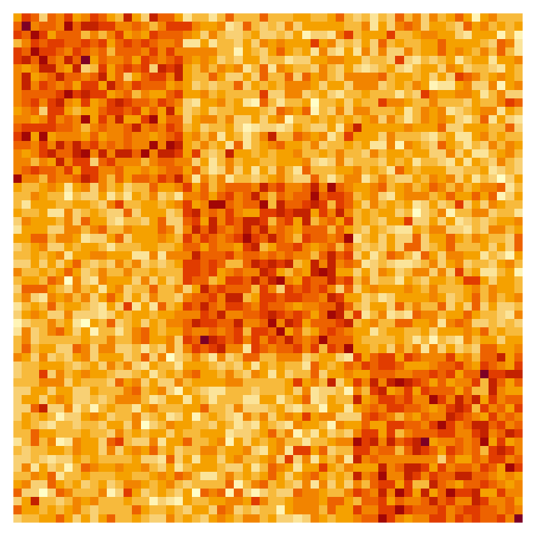
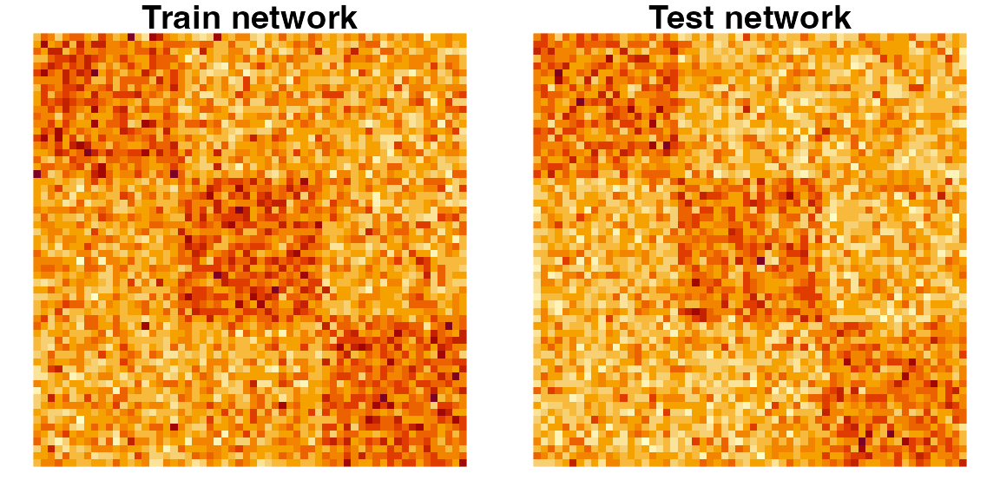
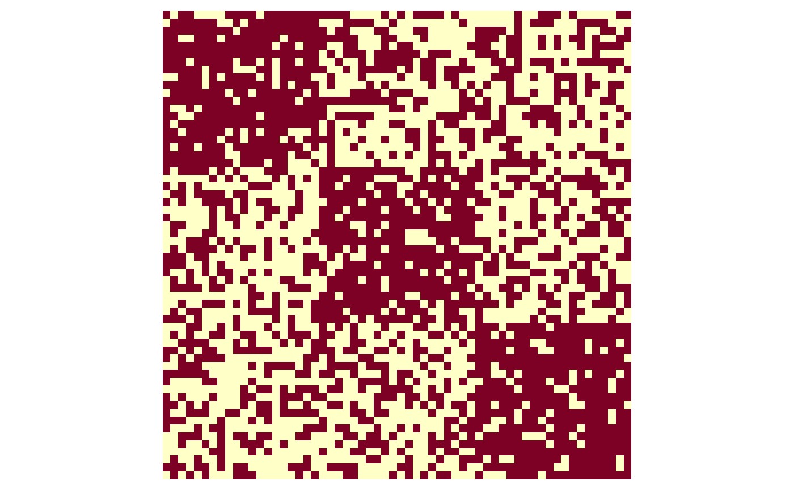
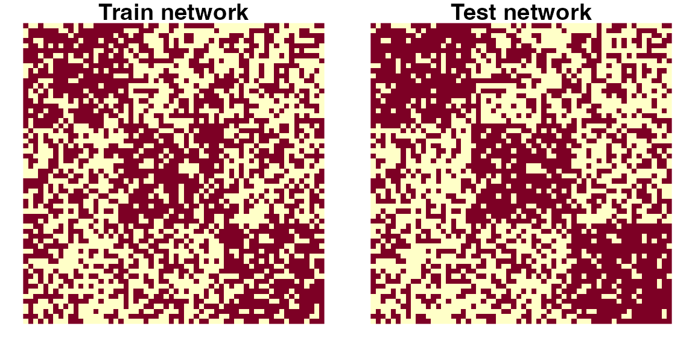
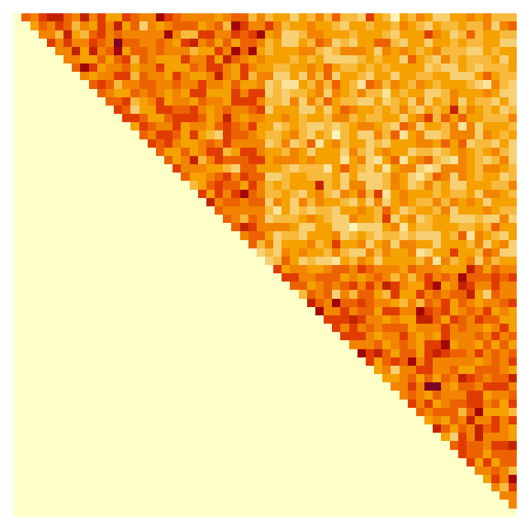
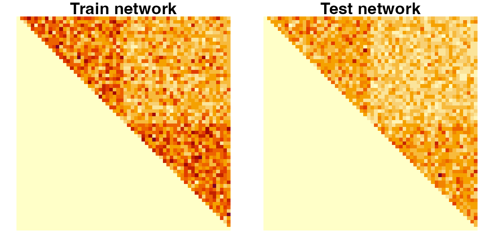

Getting started with the networkinference R package
network-inference-vignette.RmdExamples
Networks with Gaussian edges
Suppose we observe a network n = 60 nodes. In the Gaussian setting, the edges encoded in the adjacency matrix obey A_{ij} \overset{\text{ind.}}{\sim} N(M_{ij}, \tau^2), where we treat M_{ij} as unknown and \tau^2 as known. Let us simulate an adjacency matrix from a setting where there are three “true communities,” where the intra-community connectivity is \rho_1 = 25, the inter-community connectivity is \rho_2 = 18, and the known edge variance is \tau^2 = 4^2.
# Some global information
n <- 60
n_per_community <- 20
tau <- 4 # Known standard deviation of the edges
rho_1 <- 25 # Intra-community connectivity
rho_2 <- 18 # Inter-community connectivity
# Build tiles which we will use to construct our mean matrix M
intra_comm <- matrix(rep(rho_1, n_per_community^2), nrow = n_per_community)
inter_comm <- matrix(rep(rho_2, n_per_community^2), nrow = n_per_community)
# Construct mean matrix
M <- rbind(cbind(intra_comm, inter_comm, inter_comm),
cbind(inter_comm, intra_comm, inter_comm),
cbind(inter_comm, inter_comm, intra_comm))
# Draw a network using this mean matrix
A <- matrix(rnorm(n = n^2, mean = as.vector(M), sd = tau), nrow = n)Visualizing the adjacency matrix with an image (rows run from top to bottom, columns run from left to right), we can see that there are a greater density of connections within communities than there are between communities.

Now, let’s use the split_network() function from the
package to split this adjacency matrix A into our train and test adjacency matrices.
As arguments, we must provide our distributional setting (Gaussian), our
splitting parameter \epsilon = 0.5, as
well as our known variance \tau^2 =
4^2.
gaussian_split_results <- split_network(A, distribution = "gaussian",
epsilon = 0.5, tau = tau)
Atr <- gaussian_split_results$Atr
Ate <- gaussian_split_results$Ate
# Visualize both the Atr and Ate matrices
layout(matrix(1, 2, nrow = 1))
par(mfrow = c(1, 2), mar = c(1, 1, 1, 1))
image(t(Atr[nrow(Atr):1,]), axes = FALSE, asp = 1)
title("Train network")
image(t(Ate[nrow(Ate):1,]), axes = FALSE, asp = 1)
title("Test network")
Now, let us conduct community estimation using Atr using
K=4 communities. (Note that this is a
misspecified number of communities!)
estimated_communities <- nett::spec_clust(Atr, K = 4)
estimated_communities # A vector specifying each node's estimated community
#> [1] 2 2 2 2 2 4 4 4 4 2 2 2 2 2 2 4 2 4 2 4 3 3 3 3 3 3 3 3 3 3 3 3 3 3 3 3 3 3
#> [39] 3 1 1 1 1 1 1 1 1 1 1 1 1 1 1 1 1 1 1 1 1 1Let’s now try to conduct inference for the mean intra-community connectivity within the 1st estimated community. To do this, we will want to set an appropriate linear combination vector u which is of length K^2, where K is the number of estimated communities.
u_vector <- c(1, 0, 0, 0,
0, 0, 0, 0,
0, 0, 0, 0,
0, 0, 0, 0)
# Conduct inference for the selected target (mean connectivity within the
# first estimated community)
gaussian_inference <-
infer_network(Ate = Ate, u = u_vector,
communities = estimated_communities,
distribution = "gaussian",
epsilon = 0.5, tau = tau)The resulting gaussian_inference contains two pieces,
the estimate gaussian_inference$estimate (\hat{\theta}(A^{(\text{tr})}) in the
accompanying paper), as well as the estimate of the variance
gaussian_inference$estimate_variance (\hat{\sigma}^2 in the accompanying paper). In
this case, we find that
\hat{\theta}(A^{(\text{tr})}) = 24.1638, \quad \hat{\sigma}^2 = 0.0726.
So, we can construct a 90% confidence interval for this target with the following:
alpha <- 0.10
margin_of_error <- qnorm(1 - alpha/2) * sqrt(gaussian_inference$estimate_variance)
ci_lower_bound <- gaussian_inference$estimate - margin_of_error
ci_upper_bound <- gaussian_inference$estimate + margin_of_error
print(paste0("Estimate of selected target is ", round(gaussian_inference$estimate, 4)))
#> [1] "Estimate of selected target is 24.1638"
print(paste0("Confidence interval for selected target is [",
round(ci_lower_bound, 4), ", ", round(ci_upper_bound, 4), "]"))
#> [1] "Confidence interval for selected target is [23.7207, 24.6068]"Because we simulated the data ourselves, we can check whether this confidence interval actually contained the true target of inference.
true_target <- check_target_of_inference(M = M, u = u_vector,
communities = estimated_communities)
true_target_contained <- (ci_lower_bound <= true_target) &
(true_target <= ci_upper_bound)
# Print results
print(paste0("True target of inference is ", round(true_target, 4)))
#> [1] "True target of inference is 24.3651"
print("Did the 90% confidence interval contain the true target of inference?")
#> [1] "Did the 90% confidence interval contain the true target of inference?"
print(paste0("-> ", as.character(true_target_contained)))
#> [1] "-> TRUE"Networks with Bernoulli edges
Once again, we consider a setting with n=60 nodes. In the Bernoulli setting, we assume A_{ij} \overset{\text{ind.}}{\sim} \text{Bernoulli}(M_{ij}), where M_{ij} is unknown. Let us simulate in a setting where there are three “true communities,” where the intra-community connectivity is \rho_1 = 0.80, and the inter-community connectivity is \rho_2 = 0.40.
n <- 60
n_per_community <- 20
rho_1 <- 0.80
rho_2 <- 0.40
# Used to construct the mean matrix
intra_comm <- matrix(rep(rho_1, n_per_community^2), nrow = n_per_community)
inter_comm <- matrix(rep(rho_2, n_per_community^2), nrow = n_per_community)
# Construct mean matrix
M <- rbind(cbind(intra_comm, inter_comm, inter_comm),
cbind(inter_comm, intra_comm, inter_comm),
cbind(inter_comm, inter_comm, intra_comm))
# Draw a network using this mean matrix
A <- matrix(rbinom(n = n^2, size = 1, prob = as.vector(M)), nrow = n)Visualizing the adjacency matrix with an image (rows run from top to bottom, columns run from left to right), we can see that there are a greater density of connections within communities than there are between communities. In contrast to the Gaussian adjacency matrix from before, the edge connections are unweighted (binary) rather than weighted (continuous or integer-valued).

Now, we can use the split_network() function from the
package to split this into our train and test adjacency matrices. To
split with a parameter \gamma = 0.15,
we will pass in gamma = 0.15 into the function, and specify
our distributional setting.
bernoulli_split_results <- split_network(A, distribution = "bernoulli",
gamma = 0.15)
Atr <- bernoulli_split_results$Atr
Ate <- bernoulli_split_results$Ate
# Visualize both the Atr and Ate matrices
layout(matrix(1, 2, nrow = 1))
par(mfrow = c(1, 2), mar = c(1, 1, 1, 1))
image(t(Atr[nrow(Atr):1,]), axes = FALSE, asp = 1)
title("Train network")
image(t(Ate[nrow(Ate):1,]), axes = FALSE, asp = 1)
title("Test network")
Now, let us conduct community estimation using Atr using
K=4 communities. (Note that this is a
misspecified number of communities!)
estimated_communities <- nett::spec_clust(Atr, K = 4)
estimated_communities # A vector specifying each node's estimated community
#> [1] 1 3 4 1 3 1 2 1 1 1 4 1 3 1 1 3 4 3 1 2 1 3 3 1 1 3 3 3 3 1 1 3 1 3 3 1 4 1
#> [39] 2 1 3 3 4 4 3 4 4 2 2 4 3 2 4 2 4 1 4 4 4 4Let’s now try to conduct inference for the mean intra-community connectivity within the 1st estimated community. To do this, we will want to set an appropriate linear combination vector u which is of length K^2, where K is the number of estimated communities.
u_vector <- c(1, 0, 0, 0,
0, 0, 0, 0,
0, 0, 0, 0,
0, 0, 0, 0)
# Conduct inference for the selected target (mean connectivity within the
# first estimated community)
bernoulli_inference <-
infer_network(Ate = Ate, u = u_vector,
communities = estimated_communities,
distribution = "bernoulli",
Atr = Atr,
gamma = 0.15)The resulting object bernoulli_inference contains two
pieces, the estimate bernoulli_inference$estimate (\hat{\xi}(A^{(\text{tr})}) in the paper), as
well as the estimate of the variance
bernoulli_inference$estimate_variance (\hat{\sigma}^2 in the paper). In this case,
we find that
\hat{\xi}(A^{(\text{tr})}) = 0.522, \quad \hat{\sigma}^2 = 0.0012.
Thus, we construct a 90% confidence interval with the following:
alpha <- 0.10
margin_of_error <- qnorm(1 - alpha/2) * sqrt(bernoulli_inference$estimate_variance)
ci_lower_bound <- bernoulli_inference$estimate - margin_of_error
ci_upper_bound <- bernoulli_inference$estimate + margin_of_error
print(paste0("Confidence interval for selected target is [",
round(ci_lower_bound, 4), ", ", round(ci_upper_bound, 4), "]"))
#> [1] "Confidence interval for selected target is [0.4648, 0.5793]"Because we simulated the data ourselves, we can check how this matches up with the true targets of interest, both \theta(A^{(\text{tr})}) and \xi(A^{(\text{tr})}). Please see the accompanying paper for a reminder on the differences between these two targets.
true_target_theta <- check_target_of_inference(M = M, u = u_vector,
communities = estimated_communities)
true_target_xi <- check_target_of_inference(M = M, u = u_vector,
communities = estimated_communities,
bernoulli_target = TRUE,
gamma = 0.15, Atr = Atr)In this case, we find that
\theta(A^{(\text{tr})}) = 0.582, \quad \xi(A^{(\text{tr})}) = 0.5742.
Undirected networks and networks without self-loops
When working with undirected networks, an edge linking node i to j is
synonymous with an edge linking node j
to i. In the
networkinference package, only the upper triangular
portions of the adjacency matrices for undirected networks are used.
Crucially, the linear combination vector u must also correspond to an upper triangular
matrix.
For networks that do not allow self-loops, all values along the diagonal of the adjacency matrix A are ignored.
Here is a simple example involving an undirected Poisson network that does not allow self-loops.
n <- 60
n_per_community <- 30
rho_1 <- 25 # Intra-community connectivity
rho_2 <- 18 # Inter-community connectivity
# Build tiles which we will use to construct our mean matrix M
zeros_block <- matrix(rep(0, n_per_community^2), nrow = n_per_community)
intra_comm <- matrix(rep(0, n_per_community^2), nrow = n_per_community)
intra_comm[upper.tri(intra_comm, diag = FALSE)] <- rho_1
inter_comm <- matrix(rep(rho_2, n_per_community^2), nrow = n_per_community)
# Construct mean matrix
M <- rbind(cbind(intra_comm, inter_comm),
cbind(zeros_block, intra_comm))
# Draw a network using this mean matrix
A <- matrix(rpois(n = n^2, lambda = as.vector(M)), nrow = n)Visualizing the adjacency matrix with an image (rows run from top to bottom, columns run from left to right), we can see that there are a greater density of connections within communities than there are between communities.

Now, let’s use the split_network() function from the
package to split this adjacency matrix A into our train and test adjacency matrices.
As arguments, we must provide our distributional setting (Poisson), and
our splitting parameter \epsilon =
0.5.
poisson_split_results <- split_network(A, distribution = "poisson",
epsilon = 0.5, is_directed = FALSE,
allow_self_loops = FALSE)
Atr <- poisson_split_results$Atr
Ate <- poisson_split_results$Ate
# Visualize both the Atr and Ate matrices
layout(matrix(1, 2, nrow = 1))
par(mfrow = c(1, 2), mar = c(1, 1, 1, 1))
image(t(Atr[nrow(Atr):1,]), axes = FALSE, asp = 1)
title("Train network")
image(t(Ate[nrow(Ate):1,]), axes = FALSE, asp = 1)
title("Test network")
Now, let us conduct community estimation using Atr using
K=2 communities.
# Importantly, note that nett:spec_clust wants your matrix to be symmetric,
# not just upper triangular.
Atr_symm <- Atr + t(Atr)
estimated_communities <- nett::spec_clust(Atr_symm, K = 2)
estimated_communities # A vector specifying each node's estimated community
#> [1] 1 1 1 1 1 1 1 1 1 1 1 1 1 1 1 1 1 1 1 1 1 1 1 1 1 1 1 1 1 1 2 2 2 2 2 2 2 2
#> [39] 2 2 2 2 2 2 2 2 2 2 2 2 2 2 2 2 2 2 2 2 2 2Let’s conduct inference for the difference between the connectivity within the estimated communities and the connectivity between the communities. To do this, we will want to set an appropriate linear combination vector u which is of length K^2, where K is the number of estimated communities. Because our network is undirected, u must be upper triangular.
# Note that matrix(u_vector, nrow = 2) would be upper triangular!
u_vector <- c(1, 0, -2, 1)
# Normalize it
u_vector <- u_vector / sqrt(sum(u_vector^2))
# Conduct inference for the selected target (mean connectivity within the
# first estimated community)
poisson_inference <-
infer_network(Ate = Ate, u = u_vector,
communities = estimated_communities,
distribution = "poisson",
epsilon = 0.5, is_directed = FALSE,
allow_self_loops = FALSE)Now, let’s create a 90% confidence interval for the selected parameter.
alpha <- 0.10
margin_of_error <- qnorm(1 - alpha/2) * sqrt(poisson_inference$estimate_variance)
ci_lower_bound <- poisson_inference$estimate - margin_of_error
ci_upper_bound <- poisson_inference$estimate + margin_of_error
print(paste0("Confidence interval for selected target is [",
round(ci_lower_bound, 4), ", ", round(ci_upper_bound, 4), "]"))
#> [1] "Confidence interval for selected target is [5.7415, 6.4455]"